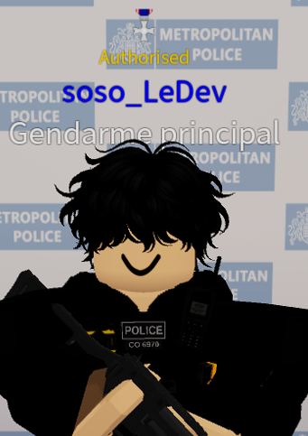

<!doctype html>
<html lang="fr">
<head>
  <meta charset="utf-8" />
  <meta name="viewport" content="width=device-width,initial-scale=1" />
  <title data-i18n="pageTitle">Buckingham Palace Roleplay — Guide et Informations</title>
  <meta name="description" content="Guide pour Buckingham Palace Roleplay (Roblox) — rôles, règles, liens et commandes." />
  <link href="https://fonts.googleapis.com/css2?family=Inter:wght@300;400;600;700&family=Playfair+Display:wght@600&display=swap" rel="stylesheet">
  <style>
    :root{
      --bg: #f4f7fb;
      --card: #ffffff;
      --muted: #6b7280;
      --accent: #007bff;
      --nav: #001f3f;
      --glass: rgba(255,255,255,0.7);
      --max-width:1120px;
      --text: #112;
      --link: var(--accent);
    }
    [data-theme="dark"]{
      --bg: #071026;
      --card: #071526;
      --muted: #9fb0ca;
      --accent: #ffbe2e;
      --nav: #07102a;
      --glass: rgba(255,255,255,0.03);
      --text: #e6eef6;
      --link: #ffbe2e;
    }

    *{box-sizing:border-box}
    html,body{height:100%;margin:0;font-family:Inter,system-ui,-apple-system,'Segoe UI',Roboto,Arial;color:var(--text); background:var(--bg); -webkit-font-smoothing:antialiased}
    a{color:var(--link)}
    .container{max-width:var(--max-width);margin:0 auto;padding:0 20px}

    /* Top utilities (theme + language) */
    .topbar{display:flex;justify-content:flex-end;gap:10px;padding:10px 20px;align-items:center}
    .toggle {display:inline-flex;align-items:center;gap:8px;background:transparent;border-radius:999px;padding:6px}
    .switch {width:46px;height:26px;border-radius:999px;background:rgba(0,0,0,0.08);position:relative;cursor:pointer;display:inline-block}
    .thumb{position:absolute;top:3px;left:3px;width:20px;height:20px;border-radius:50%;background:#fff;box-shadow:0 2px 6px rgba(0,0,0,0.12);transition:transform .18s}
    [data-theme="dark"] .switch{background:rgba(255,255,255,0.06)}
    [data-theme="dark"] .thumb{transform:translateX(20px)}
    .lang-btn{padding:6px 10px;border-radius:8px;border:1px solid rgba(0,0,0,0.06);background:transparent;cursor:pointer;font-weight:700}
    [data-theme="dark"] .lang-btn{border-color:rgba(255,255,255,0.06)}

    /* nav */
    nav.mainnav{position:sticky;top:0;z-index:60;background:transparent;border-bottom:1px solid rgba(16,24,40,0.03);backdrop-filter: blur(6px)}
    .nav-inner{display:flex;align-items:center;justify-content:space-between;gap:12px;padding:6px 20px;max-width:var(--max-width);margin:0 auto}
    .nav-left{display:flex;align-items:center;gap:12px}
    .logo{background:var(--nav);color:#fff;width:44px;height:44px;border-radius:8px;display:flex;align-items:center;justify-content:center;font-weight:700;font-family:Playfair Display}
    .nav-links{display:flex;gap:12px;align-items:center}
    .nav-links a{font-weight:600;text-decoration:none;padding:8px 10px;border-radius:8px;color:var(--text)}
    .nav-links a:hover{color:var(--link);transform:translateY(-2px)}

    /* hero */
    .hero {
      background: linear-gradient(180deg, rgba(0,31,63,0.55), rgba(0,31,63,0.45)), url("https://tr.rbxcdn.com/180DAY-ade6ce7e69ebf46c36a9ff8a7eccad11/768/432/Image/Webp/noFilter") center/cover no-repeat;
      color: #fff;
      padding: 44px 20px;
      text-align: left;
      box-shadow: 0 6px 18px rgba(2,6,23,0.18);
    }
    .hero-inner{display:flex;gap:24px;align-items:center;flex-wrap:wrap;max-width:var(--max-width);margin:0 auto}
    .hero-text{flex:1;min-width:240px}
    .brand{font-family:'Playfair Display', serif;font-size:28px;margin:0 0 8px 0;letter-spacing:0.2px}
    .hero-sub{color:rgba(255,255,255,0.9);font-size:16px;margin:8px 0 14px;max-width:60ch}
    .hero-actions{display:flex;gap:10px;flex-wrap:wrap}
    .btn{background:var(--accent);color:#072036;padding:10px 14px;border-radius:10px;border:none;font-weight:700;cursor:pointer}
    .btn.secondary{background:transparent;border:1px solid rgba(255,255,255,0.18);color:#fff}
    .hero-media{width:420px;min-width:260px;border-radius:12px;overflow:hidden;box-shadow:0 20px 60px rgba(2,6,23,0.35)}
    .hero-media img{width:100%;height:100%;object-fit:cover;display:block;transform:scale(1.02)}
    .hero-media .thumbs{display:flex;gap:8px;padding:8px;background:rgba(0,0,0,0.18);position:absolute;left:12px;bottom:12px;border-radius:8px}

    /* sections */
    section.card{background:var(--card);border-radius:12px;padding:26px;margin:20px auto;max-width:var(--max-width);box-shadow:0 12px 30px rgba(16,24,40,0.06);opacity:0; transform:translateY(20px); transition:opacity .6s ease, transform .6s ease}
    section.card.visible{opacity:1; transform:translateY(0)}
    h2{font-family:'Playfair Display',serif;color:var(--nav);margin:0 0 12px;font-size:1.4rem;border-bottom:3px solid var(--accent);padding-bottom:10px}
    h3{color:var(--nav);margin:8px 0}
    p.lead{color:var(--muted);margin:0 0 12px}
    .featured{width:100%;border-radius:10px;margin:14px 0;display:block;box-shadow:0 8px 22px rgba(2,6,23,0.06);border:1px solid rgba(16,24,40,0.04)}
    .links-row{display:flex;gap:12px;flex-wrap:wrap;margin-top:12px}

    /* link buttons: improve contrast */
    .link-btn{padding:10px 14px;border-radius:8px;background:var(--card);border:1px solid rgba(16,24,40,0.06);font-weight:700;cursor:pointer;color:var(--text)}
    .link-btn:focus{outline:3px solid rgba(0,123,255,0.18)}
    [data-theme="dark"] .link-btn{background:transparent;border:1px solid rgba(255,255,255,0.06);color:var(--text)}

    /* roles grid */
    .roles-grid{display:flex;gap:16px;margin-top:12px;flex-wrap:wrap}
    .role-card{flex:1 1 260px;background:var(--card);border-radius:12px;padding:18px;border:1px solid rgba(16,24,40,0.04);box-shadow:0 8px 18px rgba(2,6,23,0.04)}
    .role-card h4{ma
</head>
<body>
  <!-- top bar: theme + language -->
  <div class="topbar">
    <div class="toggle" title="Toggle theme">
      <div id="themeSwitch" class="switch" role="switch" aria-checked="false" tabindex="0" aria-label="Toggle theme">
        <div class="thumb"></div>
      </div>
      <small id="themeLabel" data-i18n="themeLabel">Mode Clair</small>
    </div>

    <div style="width:8px"></div>

    <div class="toggle" aria-label="Language switch">
      <button id="langFr" class="lang-btn" aria-pressed="true">FR</button>
      <button id="langEn" class="lang-btn" aria-pressed="false">EN</button>
    </div>
  </div>

  <!-- nav -->
  <nav class="mainnav" role="navigation" aria-label="navigation principale">
    <div class="nav-inner container">
      <div class="nav-left">
        <div class="logo" aria-hidden="true">BP</div>
        <div>
          <div style="font-weight:700" data-i18n="siteName">Buckingham Palace RP</div>
          <div style="font-size:12px;color:var(--muted)" data-i18n="siteTag">Guide & Informations</div>
        </div>
      </div>
      <div class="nav-links" role="menubar" aria-label="menu">
        <a href="#home" data-i18n="navHome">Accueil</a>
        <a href="#roles" data-i18n="navRoles">Rôles</a>
        <a href="#police" data-i18n="navPolice">Police (MPS)</a>
        <a href="#ambulance" data-i18n="navAmb">Ambulance (LAS)</a>
        <a href="#royals" data-i18n="navRoyals">Rois & Famille</a>
        <a href="#royal-guard" data-i18n="navRG">Garde Royale (RG)</a>
        <a class="link-btn" href="https://www.roblox.com/games/13476966119/Buckingham-Palace" target="_blank" rel="noopener" data-i18n="playNow">Jouer maintenant</a>
        <a href="#founder" class="link-btn" style="background:linear-gradient(180deg,#fff,#fff);">Fondateur</a>
      </div>
    </div>
  </nav>

  <!-- HERO -->
  <header class="hero" role="banner" id="home" aria-label="hero">
    <div class="hero-inner">
      <div class="hero-text container">
        <h1 class="brand" data-i18n="heroTitle">Buckingham Palace Roleplay sur Roblox</h1>
        <p class="hero-sub" data-i18n="heroDesc">Un jeu de rôle immersif basé sur Westminster — protégez la royauté, faites régner la loi ou semez le chaos. Rejoignez la communauté et découvrez les rôles disponibles.</p>
        <div class="hero-actions">
          <button class="btn" id="seeRoles" data-i18n="seeRoles">Voir les rôles</button>
          <button class="btn secondary" onclick="openDiscord()" data-i18n="discordBtn">Discord officiel</button>
        </div>
      </div>

      <div class="hero-media" aria-hidden="true">
        <!-- slider with two images (provided URLs) -->
        <div style="position:relative;height:260px;">
          
        </div>
      </div>
    </div>
  </header>

  <!-- HOME / SUMMARY -->
  <section class="card" aria-labelledby="home-title">
    <h2 id="home-title" data-i18n="homeTitle">Accueil</h2>
    
    <p class="lead" data-i18n="homeLead">Buckingham Palace est un jeu Roblox centré sur le roleplay vie/life. Il se déroule à Westminster, London. Rejoignez en tant que garde royal, officier de police, criminel ou paramédic.</p>

    <div class="links-row" role="navigation" aria-label="liens utiles">
      <a class="link-btn" href="https://www.roblox.com/games/13476966119/Buckingham-Palace" target="_blank" rel="noopener" data-i18n="playNowShort">Jouer maintenant</a>
      <a class="link-btn" href="https://discord.com/invite/buckingham" target="_blank" rel="noopener" data-i18n="discordLink">Discord officiel</a>
      <a class="link-btn" href="https://buckingham-palace.fandom.com/wiki/%F0%9F%92%82_Buckingham_Palace_Wiki" target="_blank" rel="noopener" data-i18n="wikiLink">Wiki</a>
      <button class="link-btn" onclick="alert('Bienvenue dans le rôle-play !')" data-i18n="startAdventure">Commencer l'aventure</button>
    </div>
  </section>

  <!-- ROLES (nouveau) -->
  <section id="roles" class="card" aria-labelledby="roles-title">
    <h2 id="roles-title">Rôles — séparation claire</h2>
    <p class="lead">Ici sont regroupés les rôles principaux — cliquez sur une carte pour aller à la section détaillée.</p>
    <div class="roles-grid">
      <div class="role-card">
        <h4>Rois & Famille royale</h4>
        <p>Rôles de la famille royale, protocoles, permissions d'accès au palais et activités cérémoniales.</p>
        <p><a href="#royals" class="link-btn">Voir les Rois</a></p>
      </div>
      <div class="role-card">
        <h4>Police (MPS)</h4>
        <p>Tous les détails sur la police, l'équipement, les codes d'état et les commandes quick-chat.</p>
        <p><a href="#police" class="link-btn">Voir la Police</a></p>
      </div>
      <div class="role-card">
        <h4>Garde Royale (RG)</h4>
        <p>Rôles liés à la garde du palais, armement et permissions spécifiques.</p>
        <p><a href="#royal-guard" class="link-btn">Voir la Garde</a></p>
      </div>
    </div>
  </section>

  <!-- ROYALS: nouveau contenu séparé -->
  <section id="royals" class="card" aria-labelledby="royals-title">
    <h2 id="royals-title">Rois & Famille royale</h2>
    <p class="lead">Cette section liste les rôles et permissions propres à la famille royale et au personnel du palais.</p>
    <ul class="clean">
      <li><strong>Monarque :</strong> Accès complet aux zones royales, protocoles, événements spéciaux.</li>
      <li><strong>Prince/Princesse :</strong> Accès restreint à certaines zones, participation aux cérémonies.</li>
      <li><strong>Conseiller Royal :</strong> Rôle administratif, communications avec les divisions (police, garde, sécurité).</li>
      <li><strong>Personnel du Palais :</strong> Staff, chambellans, agents d'accueil, soumis à règles strictes.</li>
    </ul>
    <p style="margin-top:12px;color:var(--muted)">Remarque : Les rôles royaux sont généralement limités et demandent souvent une approbation/qualification.</p>
  </section>

  <!-- POLICE -->
  <section id="police" class="card" aria-labelledby="police-title">
    <h2 id="police-title" data-i18n="policeTitle">Police — Metropolitan Police Service (MPS)</h2>
    <h3 data-i18n="standardsTitle">Standards professionnels</h3>
    <p data-i18n="standardsText">En tant que constable, adhérez à l'honnêteté, l'intégrité, le respect et la responsabilité. Respectez le roleplay et les règles du serveur.</p>

    <div class="divider" aria-hidden="true"></div>

    <h3 data-i18n="kitTitle">Réglementation du kit</h3>
    <ul class="clean" aria-label="équipements">
      <li><strong data-i18n="taserStrong">Taser :</strong> <span data-i18n="taserDesc">Utiliser pour incapaciter suspects fuyant ou menaçants.</span></li>
      <li><strong data-i18n="batonStrong">Bâton :</strong> <span data-i18n="batonDesc">Pour la défense contre suspects non coopératifs.</span></li>
      <li><strong data-i18n="radioStrong">Radio :</strong> <span data-i18n="radioDesc">Pour communications essentielles, codes d'état.</span></li>
      <li><strong data-i18n="pavaStrong">PAVA :</strong> <span data-i18n="pavaDesc">Spray incapacitant pour défense.</span></li>
      <li><strong data-i18n="cuffsStrong">Menottes :</strong> <span data-i18n="cuffsDesc">Pour retenir suspects résistants.</span></li>
      <li><strong data-i18n="firearmStrong">Armes à feu :</strong> <span data-i18n="firearmDesc">Seulement pour menace imminente à la vie.</span></li>
    </ul>

    <div class="divider"></div>

    <h3 data-i18n="codesTitle">Codes d'État</h3>
    <ul class="clean" aria-label="codes d'état">
      <li data-i18n="state0">State 0: Urgence — assistance immédiate requise</li>
      <li data-i18n="state1">State 1: En service</li>
      <li data-i18n="state2">State 2: En patrouille</li>
      <li data-i18n="state3">State 3: Au poste — disponible</li>
      <li data-i18n="state5">State 5: En route</li>
      <li data-i18n="state6">State 6: Arrivé</li>
      <li data-i18n="state9">State 9: Transport de prisonnier</li>
      <li data-i18n="state11">State 11: Hors service</li>
      <li data-i18n="state15">State 15: Reçu</li>
      <li data-i18n="state16">State 16: Répéter le dernier</li>
    </ul>

    <div class="divider"></div>

    <h3 data-i18n="quickChatTitle">Commandes Quick-Chat</h3>
    <div style="overflow:auto">
      <table aria-describedby="quickchat-desc">
        <caption id="quickchat-desc" style="caption-side:top;text-align:left;font-weight:700;padding-bottom:8px" data-i18n="quickchatCaption">Commandes vocales rapides</caption>
        <thead>
          <tr>
            <th scope="col" data-i18n="colCommand">Commande</th>
            <th scope="col" data-i18n="colMessage">Message (EN)</th>
            <th scope="col" data-i18n="colUsage">Usage</th>
          </tr>
        </thead>
        <tbody>
          <tr>
            <td>/e rights</td>
            <td data-i18n="rightsMsg">You do not have to say anything. But it may harm your defence if you do not mention when questioned something which you later rely on in court. Anything you do say may be given in evidence.</td>
            <td data-i18n="rightsUsage">Lecture des droits avant arrestation</td>
          </tr>
          <tr>
            <td>/e s1</td>
            <td data-i18n="s1Msg">I will now be searching you under Section 1 of the Police and Criminal Evidence Act 1984.</td>
            <td data-i18n="s1Usage">Fouille avec cause probable</td>
          </tr>
          <tr>
            <td>/e s32</td>
            <td data-i18n="s32Msg">I will now be searching you under Section 32 of the Police and Criminal Evidence Act 1984 due to your arrest.</td>
            <td data-i18n="s32Usage">Fouille liée à une arrestation</td>
          </tr>
          <tr>
            <td>/e s47</td>
            <td data-i18n="s47Msg">I will now be searching you under Section 47 of the Firearms Act 1968.</td>
            <td data-i18n="s47Usage">Fouille pour suspicion de possession d'arme</td>
          </tr>
          <tr>
            <td>/e t</td>
            <td data-i18n="tMsg">TASER, TASER, TASER!</td>
            <td data-i18n="tUsage">Avertir avant utilisation du taser</td>
          </tr>
          <tr>
            <td>/e tao</td>
            <td data-i18n="taoMsg">TASER ARMED OFFICER!</td>
            <td data-i18n="taoUsage">S'annoncer comme officier armé de taser</td>
          </tr>
          <tr>
            <td>/e ap</td>
            <td data-i18n="apMsg">ARMED POLICE!</td>
            <td data-i18n="apUsage">S'annoncer comme police armée</td>
          </tr>
        </tbody>
      </table>
    </div>

    <div class="divider"></div>

    <h3 data-i18n="divisionsTitle">Divisions</h3>
    <p data-i18n="divisionsDesc"><strong>Divisions primaires :</strong> Response Policing, Armed Policing, Close Protection, Roads & Transport. Certaines divisions requièrent qualifications/permissions.</p>

    <div class="divider"></div>

    <h3 data-i18n="ranksTitle">Rangs et Outils</h3>
    <ul class="clean" aria-label="rangs">
      <li data-i18n="rank1">Trainee Constable (0 points): Handcuffs, Baton, Warrant card</li>
      <li data-i18n="rank2">Special Constable (2 points): Taser</li>
      <li data-i18n="rank3">Constable (5 points): Speed gun</li>
      <li data-i18n="rank4">Senior Constable (15 points): PAVA</li>
      <li data-i18n="rank5">Sergeant (50 points): Medical bag</li>
      <li data-i18n="rank6">Inspector (100 points): Clamp</li>
      <li data-i18n="rank7">Chief Inspector (150 points): British Transport Police</li>
      <li data-i18n="rank8">Superintendent (250 points)</li>
      <li data-i18n="rank9">Chief Superintendent (350 points)</li>
    </ul>
  </section>

  <!-- AMBULANCE -->
  <section id="ambulance" class="card" aria-labelledby="amb-title">
    <h2 id="amb-title" data-i18n="ambTitle">Ambulance — London Ambulance Service (LAS)</h2>
    <p class="lead" data-i18n="ambLead">La LAS est une équipe qui s'occupe des soins avancés et du sauvetage des joueurs downed. Certains rôles peuvent être liés à un gamepass ou à une formation.</p>
    <p data-i18n="ambManual">Le manuel fournit des guidelines sur les rôles, la structure des rangs, l'entraînement et l'usage de l'équipement. Requiert entraînement via le lien ci-dessous.</p>
    <p><a href="https://docs.google.com/document/d/1soiboQEQQCtL3pA2HjcLGGUmnq-_9gsjQIGc7jrPCYY/edit?tab=t.0" target="_blank" rel="noopener" data-i18n="ambLink">Voir le document</a></p>
  </section>

  <!-- ROYAL GUARD -->
  <section id="royal-guard" class="card" aria-labelledby="rg-title">
    <h2 id="rg-title" data-i18n="rgTitle">Garde Royale (RG)</h2>
    <p><strong data-i18n="guardsmanStrong">Guardsman :</strong> <span data-i18n="guardsmanDesc">M1911 + L85A2 (avec munitions)</span></p>
    <p><strong data-i18n="corporalStrong">Corporal :</strong> <span data-i18n="corporalDesc">Permission d'ouvrir les portes du palais</span></p>
    <p data-i18n="rgDesc">La Garde Royale protège le palais et maintient l'ordre dans les zones royales. Rôles souvent restreints et soumis à qualification.</p>
  </section>

  <!-- FOUNDER / FONDATEUR : nouvelle "page" (section pleine largeur) -->
  <section id="founder" class="card" aria-labelledby="founder-title">
    <h2 id="founder-title">Fondateur</h2>
    <div class="founder-hero">
      <div class="founder-photo">
        <!-- L'image attendue: placez un fichier nommé Icon.png à la racine du site -->
        
      </div>
      <div>
        <h3>À propos du créateur</h3>
        <p class="lead">La création de ce site était surtout un projet pour m'amuser — j'ai conçu l'intégralité du design et de la structure. Toutes les illustrations et mises en page sont réalisées par moi. Pour les animations et certains effets visuels, je me suis aidé·e de l'IA.</p>
        <p>Si tu veux remplacer l'image, dépose simplement un fichier nommé <code>Icon.png</code> dans le même dossier que cette page (160×160 ou carré recommandé).</p>
        <p style="margin-top:8px;color:var(--muted)">Remarque : tu peux modifier ce texte librement pour ajouter ton pseudo, lien Discord ou remerciements.</p>
      </div>
    </div>
  </section>

  <footer>
    <div class="container">
      <p style="margin:0" data-i18n="footer">© 2025 Buckingham Palace Roleplay Guide — Design amélioré, animations et images intégrées.</p>
    </div>
  </footer>

  <script>
    // Translations object (FR and EN) - ajouté quelques clés pour nav
    const translations = {
      fr: {
        pageTitle: "Buckingham Palace Roleplay — Guide et Informations",
        themeLabel: "Mode Clair",
        siteName: "Buckingham Palace RP",
        siteTag: "Guide & Informations",
        navHome: "Accueil",
        navRoles: "Rôles",
        navPolice: "Police (MPS)",
        navAmb: "Ambulance (LAS)",
        navRoyals: "Rois & Famille",
        navRG: "Garde Royale (RG)",
        playNow: "Jouer maintenant",
        heroTitle: "Buckingham Palace Roleplay sur Roblox",
        heroDesc: "Un jeu de rôle immersif basé sur Westminster — protégez la royauté, faites régner la loi ou semez le chaos. Rejoignez la communauté et découvrez les rôles disponibles.",
        seeRoles: "Voir les rôles",
        discordBtn: "Discord officiel",
        homeTitle: "Accueil",
        homeLead: "Buckingham Palace est un jeu Roblox centré sur le roleplay vie/life. Il se déroule à Westminster, London. Rejoignez en tant que garde royal, officier de police, criminel ou paramédic.",
        playNowShort: "Jouer maintenant",
        discordLink: "Discord officiel",
        wikiLink: "Wiki",
        startAdventure: "Commencer l'aventure",
        policeTitle: "Police — Metropolitan Police Service (MPS)",
        standardsTitle: "Standards professionnels",
        standardsText: "En tant que constable, adhérez à l'honnêteté, l'intégrité, le respect et la responsabilité. Respectez le roleplay et les règles du serveur.",
        kitTitle: "Réglementation du kit",
        taserStrong: "Taser :",
        taserDesc: "Utiliser pour incapaciter suspects fuyant ou menaçants.",
        batonStrong: "Bâton :",
        batonDesc: "Pour la défense contre suspects non coopératifs.",
        radioStrong: "Radio :",
        radioDesc: "Pour communications essentielles, codes d'état.",
        pavaStrong: "PAVA :",
        pavaDesc: "Spray incapacitant pour défense.",
        cuffsStrong: "Menottes :",
        cuffsDesc: "Pour retenir suspects résistants.",
        firearmStrong: "Armes à feu :",
        firearmDesc: "Seulement pour menace imminente à la vie.",
        codesTitle: "Codes d'État",
        state0: "State 0: Urgence — assistance immédiate requise",
        state1: "State 1: En service",
        state2: "State 2: En patrouille",
        state3: "State 3: Au poste — disponible",
        state5: "State 5: En route",
        state6: "State 6: Arrivé",
        state9: "State 9: Transport de prisonnier",
        state11: "State 11: Hors service",
        state15: "State 15: Reçu",
        state16: "State 16: Répéter le dernier",
        quickChatTitle: "Commandes Quick-Chat",
        quickchatCaption: "Commandes vocales rapides",
        colCommand: "Commande",
        colMessage: "Message (EN)",
        colUsage: "Usage",
        rightsMsg: "You do not have to say anything. But it may harm your defence if you do not mention when questioned something which you later rely on in court. Anything you do say may be given in evidence.",
        rightsUsage: "Lecture des droits avant arrestation",
        s1Msg: "I will now be searching you under Section 1 of the Police and Criminal Evidence Act 1984.",
        s1Usage: "Fouille avec cause probable",
        s32Msg: "I will now be searching you under Section 32 of the Police and Criminal Evidence Act 1984 due to your arrest.",
        s32Usage: "Fouille liée à une arrestation",
        s47Msg: "I will now be searching you under Section 47 of the Firearms Act 1968.",
        s47Usage: "Fouille pour suspicion de possession d'arme",
        tMsg: "TASER, TASER, TASER!",
        tUsage: "Avertir avant utilisation du taser",
        taoMsg: "TASER ARMED OFFICER!",
        taoUsage: "S'annoncer comme officier armé de taser",
        apMsg: "ARMED POLICE!",
        apUsage: "S'annoncer comme police armée",
        divisionsTitle: "Divisions",
        divisionsDesc: "<strong>Divisions primaires :</strong> Response Policing, Armed Policing, Close Protection, Roads & Transport. Certaines divisions requièrent qualifications/permissions.",
        ranksTitle: "Rangs et Outils",
        rank1: "Trainee Constable (0 points): Handcuffs, Baton, Warrant card",
        rank2: "Special Constable (2 points): Taser",
        rank3: "Constable (5 points): Speed gun",
        rank4: "Senior Constable (15 points): PAVA",
        rank5: "Sergeant (50 points): Medical bag",
        rank6: "Inspector (100 points): Clamp",
        rank7: "Chief Inspector (150 points): British Transport Police",
        rank8: "Superintendent (250 points)",
        rank9: "Chief Superintendent (350 points)",
        ambTitle: "Ambulance — London Ambulance Service (LAS)",
        ambLead: "La LAS est une équipe qui s'occupe des soins avancés et du sauvetage des joueurs downed. Certains rôles peuvent être liés à un gamepass ou à une formation.",
        ambManual: "Le manuel fournit des guidelines sur les rôles, la structure des rangs, l'entraînement et l'usage de l'équipement. Requiert entraînement via le lien ci-dessous.",
        ambLink: "Voir le document",
        rgTitle: "Garde Royale (RG)",
        guardsmanStrong: "Guardsman :",
        guardsmanDesc: "M1911 + L85A2 (avec munitions)",
        corporalStrong: "Corporal :",
        corporalDesc: "Permission d'ouvrir les portes du palais",
        rgDesc: "La Garde Royale protège le palais et maintient l'ordre dans les zones royales. Rôles souvent restreints et soumis à qualification.",
        footer: "© 2025 Buckingham Palace Roleplay Guide — Design amélioré, animations et images intégrées."
      },
      en: {
        pageTitle: "Buckingham Palace Roleplay — Guide & Information",
        themeLabel: "Light Mode",
        siteName: "Buckingham Palace RP",
        siteTag: "Guide & Information",
        navHome: "Home",
        navRoles: "Roles",
        navPolice: "Police (MPS)",
        navAmb: "Ambulance (LAS)",
        navRoyals: "Royals & Family",
        navRG: "Royal Guard (RG)",
        playNow: "Play now",
        heroTitle: "Buckingham Palace Roleplay on Roblox",
        heroDesc: "An immersive roleplay set in Westminster — protect the royals, uphold the law or cause chaos. Join the community and explore available roles.",
        seeRoles: "See roles",
        discordBtn: "Official Discord",
        homeTitle: "Home",
        homeLead: "Buckingham Palace is a Roblox roleplay in the life genre. It takes place in Westminster, London. Join as Royal Guard, Police Officer, Criminal or Paramedic.",
        playNowShort: "Play now",
        discordLink: "Official Discord",
        wikiLink: "Wiki",
        startAdventure: "Start the adventure",
        policeTitle: "Police — Metropolitan Police Service (MPS)",
        standardsTitle: "Professional standards",
        standardsText: "As a constable, adhere to honesty, integrity, respect and accountability. Respect roleplay and server rules.",
        kitTitle: "Kit regulations",
        taserStrong: "Taser:",
        taserDesc: "Used to incapacitate fleeing or threatening suspects.",
        batonStrong: "Baton:",
        batonDesc: "For defence against non-cooperative suspects.",
        radioStrong: "Radio:",
        radioDesc: "For essential communications, state codes.",
        pavaStrong: "PAVA:",
        pavaDesc: "Incapacitating spray for defense.",
        cuffsStrong: "Handcuffs:",
        cuffsDesc: "To restrain resisting suspects.",
        firearmStrong: "Firearms:",
        firearmDesc: "Only for imminent threat to life.",
        codesTitle: "State codes",
        state0: "State 0: Emergency — immediate assistance required",
        state1: "State 1: On duty",
        state2: "State 2: Patrol",
        state3: "State 3: At station — available",
        state5: "State 5: En route",
        state6: "State 6: Arrived",
        state9: "State 9: Prisoner transport",
        state11: "State 11: Off duty",
        state15: "State 15: Received",
        state16: "State 16: Repeat last",
        quickChatTitle: "Quick-Chat commands",
        quickchatCaption: "Quick voice commands",
        colCommand: "Command",
        colMessage: "Message (EN)",
        colUsage: "Usage",
        rightsMsg: "You do not have to say anything. But it may harm your defence if you do not mention when questioned something which you later rely on in court. Anything you do say may be given in evidence.",
        rightsUsage: "Read rights before arrest",
        s1Msg: "I will now be searching you under Section 1 of the Police and Criminal Evidence Act 1984.",
        s1Usage: "Search with reasonable grounds",
        s32Msg: "I will now be searching you under Section 32 of the Police and Criminal Evidence Act 1984 due to your arrest.",
        s32Usage: "Search due to arrest",
        s47Msg: "I will now be searching you under Section 47 of the Firearms Act 1968.",
        s47Usage: "Search for firearm suspicion",
        tMsg: "TASER, TASER, TASER!",
        tUsage: "Warn before taser usage",
        taoMsg: "TASER ARMED OFFICER!",
        taoUsage: "Announce armed taser officer",
        apMsg: "ARMED POLICE!",
        apUsage: "Announce armed police",
        divisionsTitle: "Divisions",
        divisionsDesc: "<strong>Primary divisions:</strong> Response Policing, Armed Policing, Close Protection, Roads & Transport. Some divisions require qualifications/permissions.",
        ranksTitle: "Ranks & Tools",
        rank1: "Trainee Constable (0 pts): Handcuffs, Baton, Warrant card",
        rank2: "Special Constable (2 pts): Taser",
        rank3: "Constable (5 pts): Speed gun",
        rank4: "Senior Constable (15 pts): PAVA",
        rank5: "Sergeant (50 pts): Medical bag",
        rank6: "Inspector (100 pts): Clamp",
        rank7: "Chief Inspector (150 pts): British Transport Police",
        rank8: "Superintendent (250 pts)",
        rank9: "Chief Superintendent (350 pts)",
        ambTitle: "Ambulance — London Ambulance Service (LAS)",
        ambLead: "The LAS handles advanced care and rescuing downed players. Some roles may be tied to a gamepass or training.",
        ambManual: "The manual provides guidelines on roles, rank structure, training and equipment usage. Training link below.",
        ambLink: "View document",
        rgTitle: "Royal Guard (RG)",
        guardsmanStrong: "Guardsman:",
        guardsmanDesc: "M1911 + L85A2 (with ammo)",
        corporalStrong: "Corporal:",
        corporalDesc: "Permission to open palace doors",
        rgDesc: "The Royal Guard protects the palace and maintains order in royal zones. Roles are often restricted and require qualification.",
        footer: "© 2025 Buckingham Palace Roleplay Guide — Enhanced design, animations and integrated images."
      }
    };

    // simple i18n helper
    const i18nElements = Array.from(document.querySelectorAll('[data-i18n]'));
    function applyTranslations(lang) {
      const map = translations[lang] || translations.fr;
      i18nElements.forEach(el => {
        const key = el.getAttribute('data-i18n');
        if (!key) return;
        const value = map[key];
        if (value === undefined) return;
        el.innerHTML = value;
        if (key === 'pageTitle') document.title = value;
      });
      document.documentElement.lang = (lang === 'en') ? 'en' : 'fr';
    }

    // theme handling
    const themeSwitch = document.getElementById('themeSwitch');
    const themeLabel = document.getElementById('themeLabel');
    function setTheme(theme) {
      document.documentElement.setAttribute('data-theme', theme);
      localStorage.setItem('bp_theme', theme);
      const isDark = theme === 'dark';
      themeSwitch.setAttribute('aria-checked', isDark);
      themeLabel.textContent = (currentLang === 'en') ? (isDark ? 'Dark Mode' : 'Light Mode') : (isDark ? 'Mode Obscur' : 'Mode Clair');
    }
    themeSwitch.addEventListener('click', () => {
      const current = document.documentElement.getAttribute('data-theme') === 'dark' ? 'dark' : 'light';
      setTheme(current === 'dark' ? 'light' : 'dark');
    });
    themeSwitch.addEventListener('keydown', (e) => { if (e.key === 'Enter' || e.key === ' ') { e.preventDefault(); themeSwitch.click(); } });

    // language handling
    let currentLang = localStorage.getItem('bp_lang') || 'fr';
    const langFr = document.getElementById('langFr');
    const langEn = document.getElementById('langEn');
    function setLang(lang) {
      currentLang = lang;
      localStorage.setItem('bp_lang', lang);
      applyTranslations(lang);
      langFr.setAttribute('aria-pressed', lang === 'fr');
      langEn.setAttribute('aria-pressed', lang === 'en');
      const theme = document.documentElement.getAttribute('data-theme') || 'light';
      themeLabel.textContent = (lang === 'en') ? ((theme==='dark')?'Dark Mode':'Light Mode') : ((theme==='dark')?'Mode Obscur':'Mode Clair');
    }
    langFr.addEventListener('click', () => setLang('fr'));
    langEn.addEventListener('click', () => setLang('en'));

    // initial settings
    (function init() {
      const savedTheme = localStorage.getItem('bp_theme') || 'light';
      setTheme(savedTheme);
      setLang(currentLang);
    })();

    // smooth scroll
    document.querySelectorAll('a[href^="#"]').forEach(a=>{
      a.addEventListener('click', function(e){
        e.preventDefault();
        const t = document.querySelector(this.getAttribute('href'));
        if(t) t.scrollIntoView({behavior:'smooth',block:'start'});
      });
    });

    // reveal sections
    const sections = document.querySelectorAll('section.card');
    const obs = new IntersectionObserver((entries) => {
      entries.forEach(en => { if(en.isIntersecting) en.target.classList.add('visible'); });
    }, {threshold: 0.12});
    sections.forEach(s => obs.observe(s));

    // hero image rotation (two images) - small auto switch
    const heroImg = document.getElementById('heroImg');
    const heroImgs = [
      "https://tr.rbxcdn.com/180DAY-ade6ce7e69ebf46c36a9ff8a7eccad11/768/432/Image/Webp/noFilter",
      "https://tr.rbxcdn.com/180DAY-cf8c4baede730272ff127a53caad3614/768/432/Image/Webp/noFilter"
    ];
    let hi = 0;
    setInterval(() => {
      hi = (hi + 1) % heroImgs.length;
      const next = heroImgs[hi];
      const tmp = new Image();
      tmp.src = next;
      tmp.onload = () => { heroImg.style.opacity = 0; setTimeout(()=> { heroImg.src = next; heroImg.style.opacity = 1; }, 220); };
    }, 6000);

    // open discord
    function openDiscord(){ window.open('https://discord.com/invite/buckingham','_blank','noopener'); }
    document.getElementById('seeRoles').addEventListener('click', ()=> document.getElementById('roles').scrollIntoView({behavior:'smooth'}));

    console.log('BP guide updated — rôles séparés & page fondateur ajoutée');
  </script>
</body>
</html>
